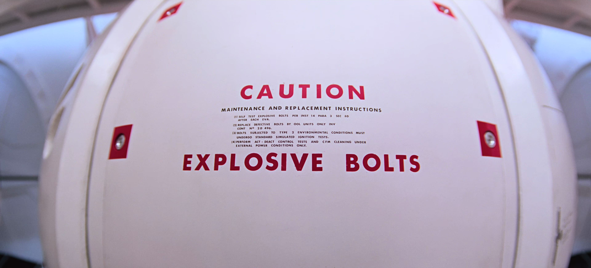

CAUTION EXPLOSIVE BOLTS
この画像は、映画『2001年宇宙の旅』の終盤、主人公のデビッド・ボーマン船長が「宇宙服のヘルメットなしで、ポッドからディスカバリー号の緊急エアロックへ飛び移る（生還する）直前」の緊迫したシーンです。
ボーマンがポッドの操縦席で「EXPLOSIVE BOLTS（爆破ボルト）」の作動ボタンを押し、
ポッドのハッチを爆破して気圧の勢いで自分をエアロックの中へと射出する直前、カメラがポッドの外側に切り替わり、
この文字が大きく映し出されます。
劇中では、この真っ白な球体のポッドのハッチに赤い文字で書かれた
「CAUTION EXPLOSIVE BOLTS（警告：爆破ボルト）」のアップが映った直後、
音が一切ない宇宙空間でハッチが吹き飛び、ボーマンがエアロックへと吸い込まれていく、
映画史に残る非常に緊張感のある名シーンです。